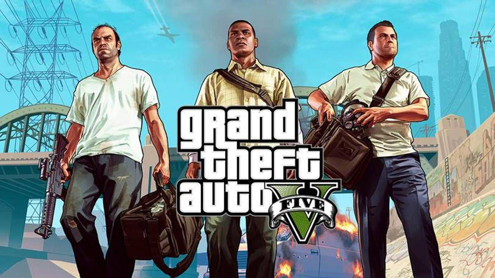
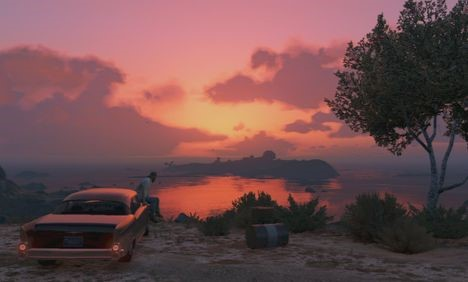
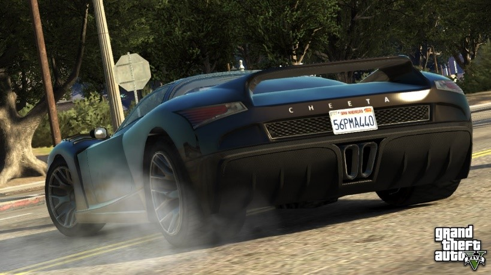
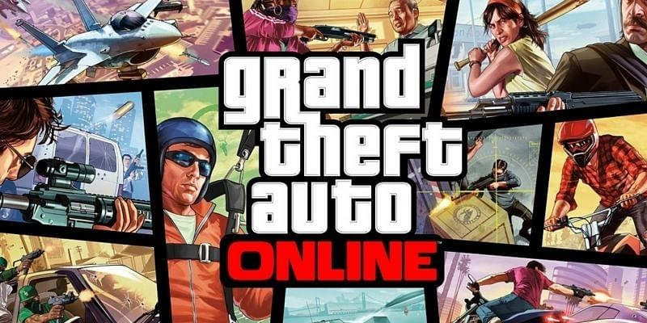

Grand Theft Auto V (GTA5)
A Grand Theft Auto V egy akció-kaland videójáték, amely 2013 szeptember 17-én jelent meg PlayStation 3 és Xbox 360 konzolokra. A játék továbbfejlesztett változata Xbox One, PlayStation 4 platformokra 2014 november 18-án érkezett meg, míg PC-s verzió 2015 április 14-én jelent meg. 2020 június 11-én bejelentették, hogy 2021 második felében jelenik meg a játék PlayStation 5 konzolra is.
A játék színhelye a fiktív San Andreas állambeli Los Santos városa és azt körülvevő vidék, mely a modernkori Los Angelesben és más dél-kaliforniai területeken alapulnak. A játék központjában a pénz áll, erre utal a logóban található római ötös számjegy is, amely bankjegy stílusú megjelenést kapott.
A játékból 2016 májusáig több, mint 65 millió darabot adtak el, amivel 7 Guinness rekordot állított fel, és ezzel a világ egyik legeladottabb játéka lett.

Főszereplők és történet
A Grand Theft Auto 5-ben korábbi részekkel ellentétben nem egy, hanem három játszható szereplő van: Michael De Santa (igazi nevén Michael Townley), Trevor Philips és Franklin Clinton. Őket nem csak opcionálisan, hanem kötelezően ki kell választani, főleg egyes küldetések miatt, amit a játékos csak az adott karakterrel tud végrehajtani.
Michael visszavonult, jómódban élő, profi bankrabló, akit az FIB (való életben az FBI lenne) bevett a tanúvédelmi programba a családjával. Van egy felesége és két gyereke, Amanda De Santa a feleség, James „Jimmy” De Santa és Tracey De Santa, akikkel nem jön ki jól, aminek a vége csak nem az lett, hogy végleg szétváltak.
Trevor volt barátja Michaelnek, vidéken él, fekete ügyletekkel foglalkozik és forrófejű pszichopata. 2004-ben North Yankton-ban Trevor részt vett bankrablásban (játék bevezető része), ahonnan sikerült elmenekülnie, és azt hitte, hogy Michael meghalt, de 9 évvel később a hírekben hallotta, hogy kiraboltak egy ékszerboltot Los Santosban, aminek Michael is részese volt, így elment Los Santosba, hogy megtalálhassa őt.
Franklin afroamerikai fiatalember, aki játék eseményei előtt kisstílű bűnöző, elmellet sok tapasztalata van a volán mögött. A nagynénjével és egy házban, de későbbiekben Lester vesz neki egy nagy luxus házat, és ott éli tovább az életét a kutyájával, Choppal
A történetben az igazi kaland akkor kezdődik, amikor a három szereplő találkozik, ugyanis komoly, nagy tervezést igénylő bűncselekménybe fognak, hogy meggazdagodjanak.
Sokszor a történet fonalát mi irányíthatjuk, akárcsak a rablások kitervelésében, de így van ez a játék végén is, amikor Devin Weston, egy gazdag, korrupt üzletember állít minket döntés elé.
Itt három opció lehetséges:
• A: Az opcióban az FIB kérésére Trevor haláláról kell gondoskodnunk, ami egy autósüldözéssel kezdődik, majd Trevor kocsijával belehajt egy tartályba, aminek hatására benzin folyik Trevor köré, amit egy pisztolylövéssel gyújthatunk lángra.
• B: Devin Weston utasítására Michaelt kell eltennünk láb alól, Az A végződéshez hasonlóan egy autósüldözéssel kezdődik, majd Franklin és Michael az olajfinomítónál elkezdenek verekedni, egészen addig, amíg Franklin le nem löki Michaelt, de elkapja a kezét. Két lehetőség van: vagy megmentjük vagy elengedjük Michaelt. Ha megmentjük őt, akkor direkt lefejel minket, ami miatt véletlenül elengedjük őt, és lezuhan.
• C: Ez a „Deathwish” opció. Az összes esküdt ellenségünkkel leszámolunk, köztük Wei Chenggel, a Triadok vezetőjével, Harold „Stretch” Joseph-fel, a Ballasok kémjével, Steve Hains-szel a korrupt FIB ügynökkel és végül Devin Westonnal, akit az óceánba borítunk kocsijával együtt.
Ha az A vagy B végződést választjuk, akkor Trevor vagy Michael nem lesz játszható a három karakter közül, kivéve, ha újra megcsináljuk a küldetést, és más végződést választunk.
Ha a játékos teljesít egy küldetést, kap lehetőséget szabadon mászkálásra, aminek segítségével felt tudja fedezni a város ismeretlen területeit.
A játékmenet mellet, rengeteg elfoglaltságot lehet találni. Például: vadászat, vérdíjak megszerzése, kikapcsolódás az ismerősökkel, jóga, offroad és jet ski versenyek, a víz alatti világ felfedezése, vagy éppen a kutyával, Choppal való játék. A küldetéseken kívül ismeretleneknek teljesíthetünk szolgálatot. Ez utóbbi neve „Strangers & Freaks”.

Járművek
A GTA V-ben számos jármű kapott helyet a BMX-től a tankig. Jet-ski, monster trick, harci helikopter, jetpack (1.44) és egyéb más nagyszerű jármű jelenig meg a játékban. A játékos a GTA IV kis területével ellentétben ebben a részben sokkal szabadabban tudnak járművekkel repülni, A játékot tartalmilag a Rockstar Games folyamatosan bővíti, így rengeteg új jármű kerül havi szinten a GTA Online-ba.

Többjátékos Mód (GTA Online)
A multiplayer szükségességének helyzete hasonló a Max Payne 3-éhoz. Az új Rockstar Games Social Club alkalmasságát bizonyítja a Max Payne 3, s majd a GTA V-is. a GTA V játékosai saját csoportokat alkothatnak barátaikkal, vagy csatlakozhatnak egy meglévőhöz. A játékos tagja lehet egyszerre akár 5 csoportnak is, a feladatok elvégzéséért a targok tapasztalati pontokat szerezhetnek. 2012 végén a Rockstar ezt nyilatkozta: „finomítottunk a multiplayer nyitott világán és valami igazán különlegeset kaptunk”, a legnagyobb hangsúly a GTA V fejlesztésében van, amelyet GTA Online-nak hívnak. 2013 október 3-án elérhetővé vált a GTA Online Playstation 3 és Xbox 360 konzolon (ezekre a konzolokra mára már nem jön semmilyen újdonság). Az Xbox One, PlayStation 4, illetve PC-s verzión FPS módban is játszhatunk, jobb grafikával és a GTA Online-ban 30 játékossal
2015 március 10-től elérhető a GTA Online Heists, amelynek keretében nagyszabású rablásokat hajthatunk végre San Andreas szerte (The Fleeca Job, The Prison Break, the Humane Labs Raid, Series-A Funding, The Pacific Standard Job, az újabb heistek között a The Doomsday Heist és Casino Heist)
2015 december 15-től elérhető az úgynevezett Executives and Other Criminals nevű DLC (kizárólag Xbox One, PlayStation 4-re és PC-re), ahol már saját bűnszervezetet építhetünk fel, vehetünk luxusjachtokat, vagy különféle erősen páncélozott, illetve felfegyverkezett limuzinokat és SUV-ket
A GTA Online számos olyan dolgot is tartalmaz, amit az egyszemélyes mód nem. Pl. kaszinó, egyéb fegyver (atomizer, balta, gránátvető pisztoly), meg más járműveket.
